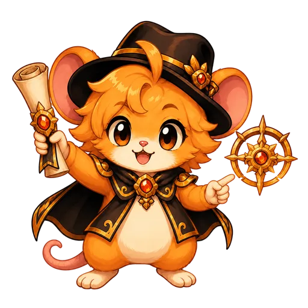

Hall da Evolução
Honra da Avalon
As patentes celebram quem evolui com constância, comparando o dano atual à média das últimas raids válidas.

Hall da Evolução
As patentes celebram quem evolui com constância, comparando o dano atual à média das últimas raids válidas.